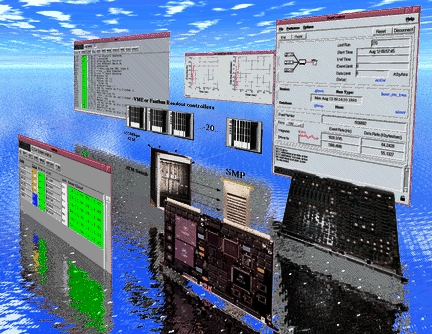

2.0 Documentation
Jefferson lab. Data acquisition system, Version 2
Note: Due to a heavy work load and a sudden drop in DAQ group
staffing in December 1996 these
web pages haven't been updated in about a year!
We are now up to full strength and will (hopefully) be able to update
the site. Hold on to your hats!
CODA
is a portable,
modular, and above all
configurable data
acquisition system
designed at the "Thomas
Jefferson National
Accelerator Facility"
(formerly known as
CEBAF).
Originally CODA was an
acronym, CEBAF Online
Data Acquisition, but
with the renaming of the
laboratory it has been
decided that CODA
stands for CODA and
nothing else.